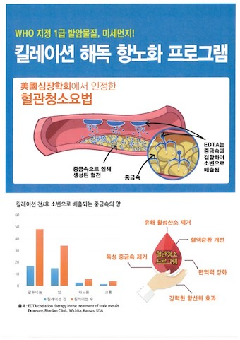
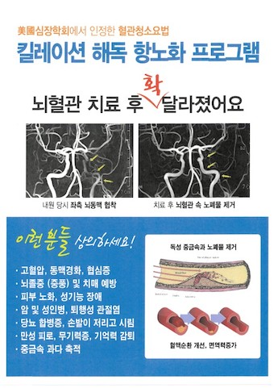
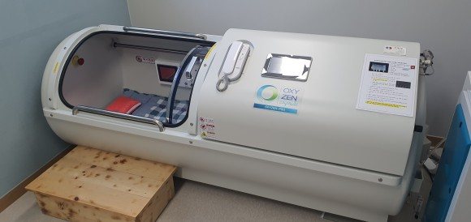
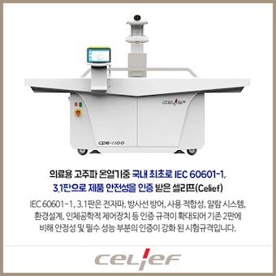
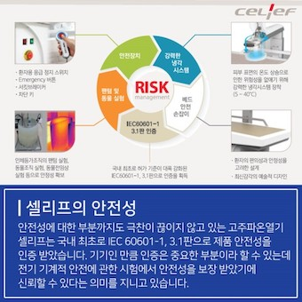
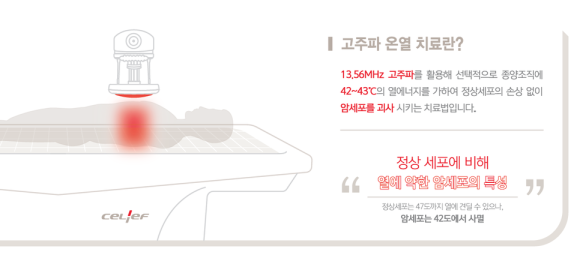
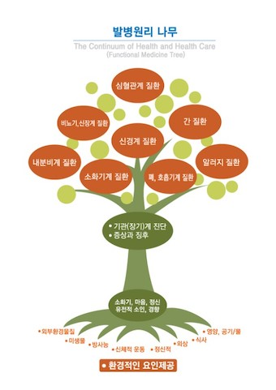
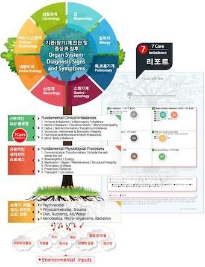
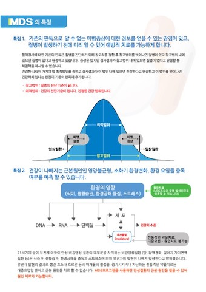

More Website Templates @ TemplateMonster.com - October 06, 2014!



킬레이션치료
EDTA와 비타민, 미네랄 등을 포함한 약제를 정맥투여하는 것으로, 투여한 약제와 혈액속의 독성중금속이 결합하여 신장을 통해 걸러내어 소변으로 배출시키는 해독요법입니다.
킬레이션 치료를 받은 환자들은 심혈관질환이 개선되는 효과가 나타나면서 의학계의 관심과 함께 많은 논문이 발표되었고 효능이 입증되었으며 안전한 프로토콜이 개발되었습니다.



고압산소요법
대기압인 1기압보다 높은 기압상태에서 고농도의 산소를 공급하는 방법으로 인체 내 혈중 산소포화도가 높아지게 되어 각종 질병이나 수술 등으로 신체 밸런스가 급격히 손상된 분들의 신체 각 세포 깊이 산소가 신속하게 공급되어 통증물질 분해하고 활성산소 를 감소시켜 우리몸의 치유, 재생능력을 높여줍니다.
암세포의 활동 억제, 항암.방사선 부작용 완화, 수술 회복 속도 향상, 림프종의 예방, 면역력 증가 및 대사기능 향상, 항암제 치료 효과 상승



고주파온열치료
'온열암치료'란?
온열치료는 수천년의 역사를 가지고 있는 전통 의학의 하나로, 열을 이용하여 암세포의 대사율을 증가시켜 산소공급의 억제를 유도하여 에너지를 고갈시킴으로써 괴사되는 원이를 이용한 치료법입니다.
고주파온열치료는 암세포와 정상 세포의 전기적인 차이점을 이용한 치료법으로 13.56MHz 고주파를 활용 해 종양조직에 42~43℃ 의 열에너지를 가하여 정상세포의 손상 없이 암세포만 가열시켜 괴사시키는 치료법입니다.
암 세포 하나하나의 세포막을 둘러싸고 있는 세포외액은 전기저항이 정상 세포보다 매우 낮기 때문에 고주파 전류가 인체를 흐를 때 암조직의 형태, 위치와 관계없이 전류는 세포외액을 따라 집중적으로 흐르게 됩니다.
고주파온열치료기는 암세포에 집중 된 전류흐름을 이용하여 42℃ 이상의 열에너지를 가하여 암세포가 자연적으로 파괴되어 괴사되게 합니다.
(주)동서케어 celief 홍보자료 중





MDS검사
MDS 검사는 간단한 혈액검사를 통한 질병의 원인을 찾는 검사로 영양불균형, 소화기 환경 및 환경오염물 중독 관련 검사결과를 분석 해 주는 검사법입니다.현대의학은 세분화 및 전문화로 질병이 일어나는 근본적인 원인을 찾지못하고 증상만을 보고 치료를 하는 단점이 있습니다.
일반적으로 나무의 열매나 잎을 치료하는 것 즉, 환자의 증상이나 검사 결과에 의거하여 증상 해결에 초점을 맞추고 있는 것이라 한다면 MDS분석서비스는 질병이 일어나는 근본 원인 (기저질환,즉 정신적,신체적,유전적,환경적,식사,영양,공기/물,외부환경물질, 미생물, 방사능 등) 을 찾아 이를 개선시키므로써 열매로 나타나는 질환을 나타나지 않도록 근본원인을 찾아 치료한다는 개념입니다.